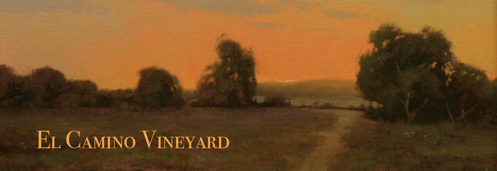

After several wonderful years as a small, "micro" church, El Camino Vineyard has begun a process of transitioning to a bilingual Spanish/English church. We have begun to partner with the
Palo Alto Vineyard and are currently celebrating monthly lunches in Spanish.
Over the coming weeks, we'll have more clarity about our next steps and we will be sure to share that info with you.
For now, we will continue to support our local schools and police department. We will also continue our Run Club. (If you would like more info, check out the
Mountain View Area Run Club on meetup.com.) We will also continue to participate in the Vineyard USA's Iberia Partnership — a group of local churches that are helping to plant and develop churches in Spain and Portugal.
If you're interested in being part of what we're doing, please connect with Pastor Randy Chase at the following email address:
randy@elcaminovineyard.org.
El Camino Vineyard Church is part of the Vineyard family of churches.
Vineyard Links